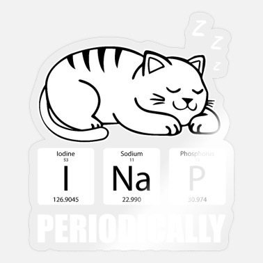

Многие учёные были фанатами кошек. Они не только заботились о них, но и ставили им в заслугу свои работы. 
СтатьяСамый известный кот в истории науки обязан своим именем физику и нобелевскому лауреату Эрвину Шрёдингеру, который получил эту награду в 1933 году за свои ранние работы по квантовой механике.
Но наибольшую известность учёному принёс мысленный эксперимент с теоретическим котом в коробке, который одновременно и жив, и мёртв.